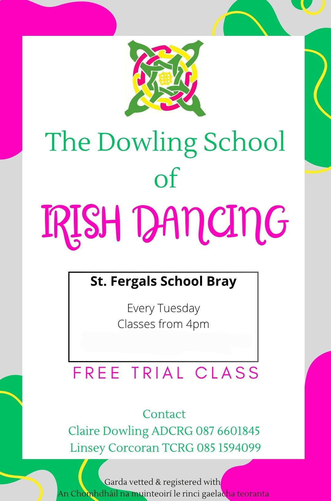

Irish Dancing Classes in Wicklow
Dance
Irish dancing classes provided by the Dowling School of Irish Dancing with classes in various locations in Wicklow and South County Dublin!
Verified 2026-04-12T19:48:42
Contact: 087 660 1845 · dowlingschoolofdancing@live.ie
Address: Private Address
View on Google Maps →
Visit Website
View on Google Maps →